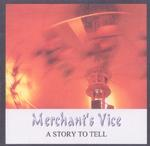

Home Artist links

Merchants Vice - A Story To Tell
| Artist: | Merchants Vice |
| Title: | A Story To Tell |
| Label: | self produced |
| Length(s): | 27 minutes |
| Year(s) of release: | 2001 |
| Month of review: | [11/2002] |
Line up
Les Wardle - vocals
Mark English - keyboards, backing vocals
Chas Allen - drums, backing vocals
Nick Martin - guitar, backing vocals
Kevin Rowe - bass
Tracks
| 1) | Reason To Change 7.32@3:40 |
|
| 2) | Caught In The Net | 7.39
|
| 3) | All Our Lives | 12.26
|
Summary
A demo cd from this new English band.
The music
Reason To Change is the opener of this short demo cd. The intro features
repetitive cello (in view of the fact that there is not cello player listed
I assume we are hearing keyboards here) for the main part, a rather orchestral
opening. The vocal melody is slow and somewhat mysterious. The vocal part
reminds me quite a lot of the Dutch progressive neo bands with also a bit of
Pallas in there, especially in the more poppy harmony parts which come in
later on. The mood of the song is however closer to, say, Fruitcake.
Time for a moody intermission, with reverberating keyboards that meander
their way through the song. Then the bombasm comes into the music, and we
come back to the opening vocal part. The slowness of the music also reminds
a bit of Pink Floyd, as well as the echoey guitar solo following it.
Not bad, not bad, but maybe a bit too derivative at times. It also seems to
me the band is still feeling its way. Production and sound quality are not
bad, certainly not for a demo, but this is still a demo.
Caught In The Net might remind some of Grey Lady Down. This is a waltzy track
with plenty of room for the keyboards. The melodies are not always strong on this
one and I like it less than the previous one, a bit too frolic maybe.
The song has some nice parts, in which atmosphere also counts, but the poppy
parts are a bit too simple.
All Our Lives is the longest one on this demo cd. The opening guitar is
reminiscent of Shine On You Crazy Diamond. After some dark, slow vocals
the guitar barges in. The vocal continuation sound a bit flat, and reminds
me strongly of Twelfth Night and Geoff Mann. And this can't just be the
fact that song is about religion. It shows here, more than on the other tracks,
that this is a demo. The harmonies aren't a good idea, they drown
in the remainder and only serve to make things sound muddled.
Halfway, we move more and more into Twelfth Night territory. The vocal melodies
are fine, and some of the guitar lines are also good. The overall sound is
a bit dated. The vocalist is of the kind who sings along with the music,
but he does not lead it, notwithstanding his tendency to dramatize.
Conclusion
Although it has become a swear word in some circles, I have to say that
this band operates in the neo-progressive vein. References are Pallas,
Grey Lady Down, Twelfth Night and Dutch bands like Ywis and Timelock. In
between the band also looks to Pink Floyd, especially during the
atmospheric and slower parts. The keyboards are from before everyone went
back to analog. The production needs some brushing up, but
hey this is demo cd. Nothing very wrong with it, but it seems to me the band
is still looking around a bit for their own identity, and this includes
compositions that do not sound like one or the other band. If they improve
there, they could make a dent in, for instance, The Netherlands.
© Jurriaan Hage